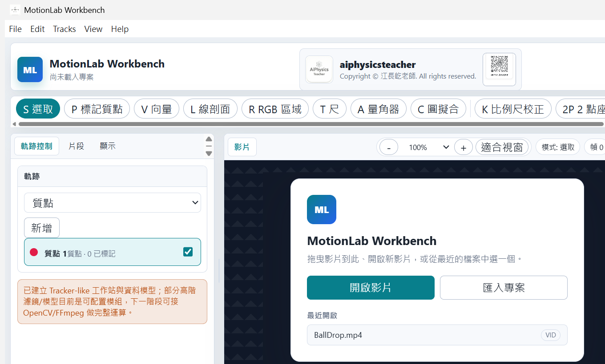
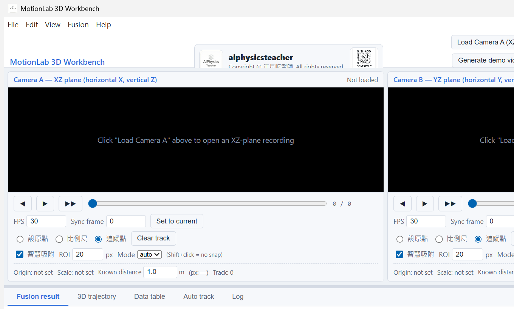

2D Workbench 操作流程
- 開啟影片，確認 FPS、總幀數與畫面比例。
- 使用比例尺與座標工具，設定真實距離、原點與軸向。
- 建立 Point Mass 或其他分析物件，逐幀標記位置。
- 需要精細標記時可使用影片放大縮小與逐幀快捷鍵。
- 可啟用 centroid snap 或 auto track，加快連續幀追蹤。
- 到資料表與圖表檢查位置、速度、加速度，再匯出 CSV。
2D 與 3D 影片追蹤教學網站
這個網站整理 MotionLab 2D Workbench 與 MotionLab 3D Workbench 的核心概念、 追蹤流程、校正方法與輸出資料意義。之後可接上 GitHub 發布頁、資源包下載連結、 課程講義與示範影片。


Core Math
2D 模式以單一影片為基礎。使用者先設定原點、比例尺與座標軸方向， 程式再把每一幀標記到的像素位置轉成真實世界座標。若影像水平與實驗座標有夾角， 會以座標旋轉校正；若已知距離為 L、對應像素距離為 p，比例可寫成 p / L。
軌跡資料可進一步產生位置、速度、加速度、路徑長、角度與圖表資料。 自動追蹤則以使用者給定的初始目標區域為模板，在後續幀搜尋最相近位置； centroid snap 可協助把點吸附到亮點或暗點中心，降低人工點選誤差。
目前 MotionLab 3D Workbench 採用兩個近似正交視角：相機 A 量到 XZ 平面， 相機 B 量到 YZ 平面。兩邊各自完成原點與比例尺校正後，程式依同步幀與 FPS 將 兩條時間序列對齊，取共同時間範圍，融合出 X、Y、Z 軌跡。
為了處理兩台相機校正後仍可能存在的 Z 軸尺度差與近距離視差，3D 引擎使用 Z 軸一致性做自校正：同一個物體在兩個視角中應該有相同的 Z。程式會估計 Z 對齊的 scale、offset，以及一階視差修正參數，並回報共同有效幀數與 Z 殘差 RMS。
How To Use
Downloads
2D 與 3D 可攜版已上傳至 GitHub Releases，下載後解壓縮即可執行；開源資料與 source package 目前先維持未公開。
Technical References
本網站的操作脈絡與術語整理參考舊 Tracker / Open Source Physics 的公開資源， 以及 Tyson Hedrick 的 DLTdv8 公開手冊。MotionLab 的介面與資料流程會以本專案目前的 2D 與 3D 實作為準；這些來源是技術背景與教學脈絡，不表示完全移植或等同於原工具。